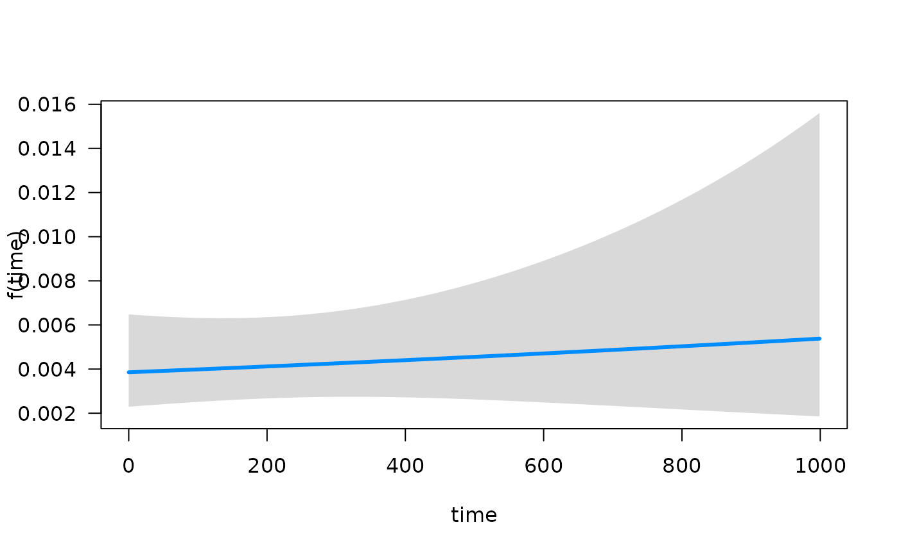
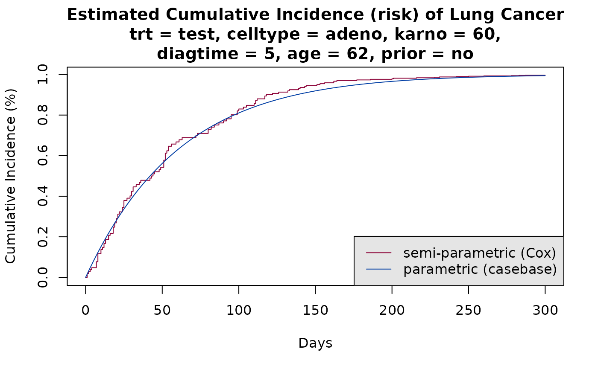
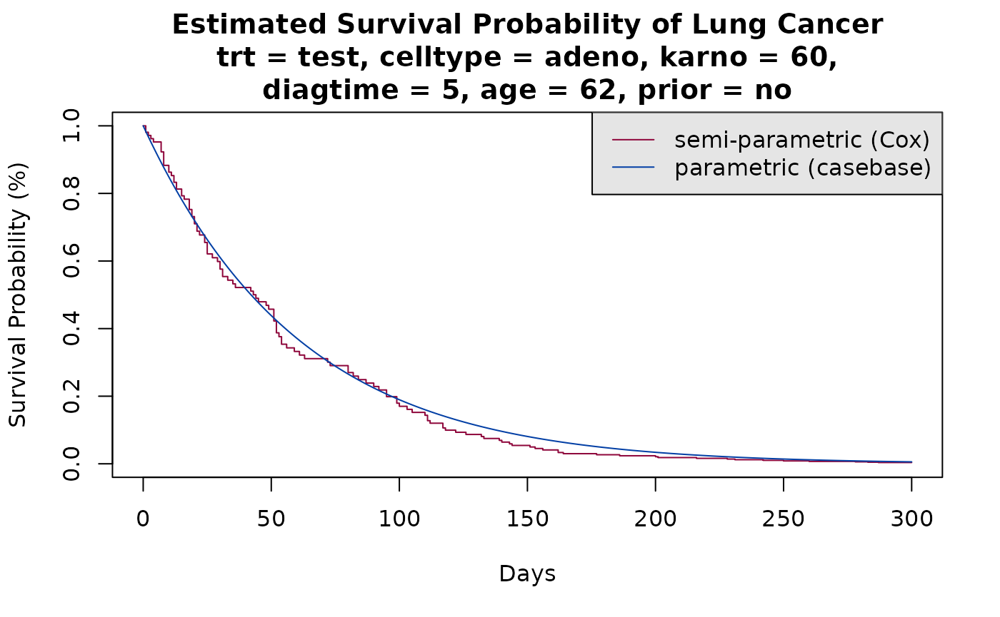

Introduction to casebase sampling
Maxime Turgeon
2024-04-09
Source:vignettes/smoothHazard.Rmd
smoothHazard.RmdMethodological details
evaluate_vignette <- requireNamespace("eha", quietly = TRUE) &&
requireNamespace("visreg", quietly = TRUE) &&
requireNamespace("splines", quietly = TRUE)
knitr::opts_chunk$set(eval = evaluate_vignette)Case-base sampling was proposed by Hanley and Miettinen, 2009 as a way to fit smooth-in-time parametric hazard functions via logistic regression. The main idea, which was first proposed by Mantel, 1973 and then later developed by Efron, 1977, is to sample person-moments, i.e. discrete time points along an subject’s follow-up time, in order to construct a base series against which the case series can be compared.
This approach allows the explicit inclusion of the time variable into the model, which enables the user to fit a wide class of parametric hazard functions. For example, including time linearly recovers the Gompertz hazard, whereas including time logarithmically recovers the Weibull hazard; not including time at all corresponds to the exponential hazard.
The theoretical properties of this approach have been studied in Saarela and Arjas, 2015 and Saarela, 2015.
Analysis of the veteran dataset
The first example we discuss uses the well-known veteran
dataset, which is part of the survival package. As we can
see below, there is almost no censoring, and therefore we can get a good
visual representation of the survival function:
## See example usage at http://sahirbhatnagar.com/casebase/## Warning in data(veteran): data set 'veteran' not found
table(veteran$status)##
## 0 1
## 9 128
evtimes <- veteran$time[veteran$status == 1]
hist(evtimes, nclass = 30, main = '', xlab = 'Survival time (days)',
col = 'gray90', probability = TRUE)
tgrid <- seq(0, 1000, by = 10)
lines(tgrid, dexp(tgrid, rate = 1.0/mean(evtimes)),
lwd = 2, lty = 2, col = 'red')As we can see, the empirical survival function resembles an exponential distribution.
We will first try to estimate the hazard function parametrically using some well-known regression routines. But first, we will reformat the data slightly.
veteran$prior <- factor(veteran$prior, levels = c(0, 10), labels = c("no","yes"))
veteran$celltype <- factor(veteran$celltype,
levels = c('large', 'squamous', 'smallcell', 'adeno'))
veteran$trt <- factor(veteran$trt, levels = c(1, 2), labels = c("standard", "test"))Using the eha package, we can fit a Weibull form, with
different values of the shape parameter. For shape = 1, we
get an exponential distribution:
library(eha)
y <- with(veteran, Surv(time, status))
model1 <- weibreg(y ~ karno + diagtime + age + prior + celltype + trt,
data = veteran, shape = 1)
summary(model1)## Call:
## weibreg(formula = y ~ karno + diagtime + age + prior + celltype +
## trt, data = veteran, shape = 1)
##
## Covariate Mean Coef Exp(Coef) se(Coef) Wald p
## karno 68.419 -0.031 0.970 0.005 0.000
## diagtime 8.139 0.000 1.000 0.009 0.974
## age 57.379 -0.006 0.994 0.009 0.505
## prior
## no 0.653 0 1 (reference)
## yes 0.347 0.049 1.051 0.227 0.827
## celltype
## large 0.269 0 1 (reference)
## squamous 0.421 -0.377 0.686 0.273 0.166
## smallcell 0.206 0.443 1.557 0.261 0.090
## adeno 0.104 0.736 2.087 0.294 0.012
## trt
## standard 0.477 0 1 (reference)
## test 0.523 0.220 1.246 0.199 0.269
##
## log(scale) 2.811 16.633 0.713 0.000
##
## Shape is fixed at 1
##
## Events
## Total time at risk 16663
## Max. log. likelihood -716.16
## LR test statistic 70.1
## Degrees of freedom 8
## Overall p-value 4.64229e-12If we take shape = 0, the shape parameter is estimated
along with the regression coefficients:
model2 <- weibreg(y ~ karno + diagtime + age + prior + celltype + trt,
data = veteran, shape = 0)
summary(model2)## Call:
## weibreg(formula = y ~ karno + diagtime + age + prior + celltype +
## trt, data = veteran, shape = 0)
##
## Covariate Mean Coef Exp(Coef) se(Coef) Wald p
## karno 68.419 -0.032 0.968 0.005 0.000
## diagtime 8.139 0.001 1.001 0.009 0.955
## age 57.379 -0.007 0.993 0.009 0.476
## prior
## no 0.653 0 1 (reference)
## yes 0.347 0.047 1.048 0.229 0.836
## celltype
## large 0.269 0 1 (reference)
## squamous 0.421 -0.428 0.651 0.278 0.123
## smallcell 0.206 0.462 1.587 0.262 0.078
## adeno 0.104 0.792 2.208 0.300 0.008
## trt
## standard 0.477 0 1 (reference)
## test 0.523 0.246 1.279 0.203 0.224
##
## log(scale) 2.864 17.537 0.671 0.000
## log(shape) 0.075 1.077 0.066 0.261
##
## Events
## Total time at risk 16663
## Max. log. likelihood -715.55
## LR test statistic 65.1
## Degrees of freedom 8
## Overall p-value 4.65393e-11Finally, we can also fit a Cox proportional hazard:
model3 <- coxph(y ~ karno + diagtime + age + prior + celltype + trt,
data = veteran)
summary(model3)## Call:
## coxph(formula = y ~ karno + diagtime + age + prior + celltype +
## trt, data = veteran)
##
## n= 137, number of events= 128
##
## coef exp(coef) se(coef) z Pr(>|z|)
## karno -3.282e-02 9.677e-01 5.508e-03 -5.958 2.55e-09 ***
## diagtime 8.132e-05 1.000e+00 9.136e-03 0.009 0.99290
## age -8.706e-03 9.913e-01 9.300e-03 -0.936 0.34920
## prioryes 7.159e-02 1.074e+00 2.323e-01 0.308 0.75794
## celltypesquamous -4.013e-01 6.695e-01 2.827e-01 -1.420 0.15574
## celltypesmallcell 4.603e-01 1.584e+00 2.662e-01 1.729 0.08383 .
## celltypeadeno 7.948e-01 2.214e+00 3.029e-01 2.624 0.00869 **
## trttest 2.946e-01 1.343e+00 2.075e-01 1.419 0.15577
## ---
## Signif. codes: 0 '***' 0.001 '**' 0.01 '*' 0.05 '.' 0.1 ' ' 1
##
## exp(coef) exp(-coef) lower .95 upper .95
## karno 0.9677 1.0334 0.9573 0.9782
## diagtime 1.0001 0.9999 0.9823 1.0182
## age 0.9913 1.0087 0.9734 1.0096
## prioryes 1.0742 0.9309 0.6813 1.6937
## celltypesquamous 0.6695 1.4938 0.3847 1.1651
## celltypesmallcell 1.5845 0.6311 0.9403 2.6699
## celltypeadeno 2.2139 0.4517 1.2228 4.0084
## trttest 1.3426 0.7448 0.8939 2.0166
##
## Concordance= 0.736 (se = 0.021 )
## Likelihood ratio test= 62.1 on 8 df, p=2e-10
## Wald test = 62.37 on 8 df, p=2e-10
## Score (logrank) test = 66.74 on 8 df, p=2e-11As we can see, all three models are significant, and they give
similar information: karno and celltype are
significant predictors, both treatment is not.
The method available in this package makes use of case-base sampling. That is, person-moments are randomly sampled across the entire follow-up time, with some moments corresponding to cases and others to controls. By sampling person-moments instead of individuals, we can then use logistic regression to fit smooth-in-time parametric hazard functions. See the previous section for more details.
First, we will look at the follow-up time by using population-time plots:
# create popTime object
pt_veteran <- popTime(data = veteran)## 'time' will be used as the time variable## 'status' will be used as the event variable
class(pt_veteran)## [1] "popTime" "data.table" "data.frame"
# plot method for objects of class 'popTime'
plot(pt_veteran)Population-time plots are a useful way of visualizing the total follow-up experience, where individuals appear on the y-axis, and follow-up time on the x-axis; each individual’s follow-up time is represented by a gray line segment. For convenience, we have ordered the patients according to their time-to-event, and each event is represented by a red dot. The censored observations (of which there is only a few) correspond to the grey lines which do not end with a red dot.
Next, we use case-base sampling to fit a parametric hazard function via logistic regression. First, we will include time as a linear term; as noted above, this corresponds to an Gompertz hazard.
model4 <- fitSmoothHazard(status ~ time + karno + diagtime + age + prior +
celltype + trt, data = veteran, ratio = 100)## 'time' will be used as the time variable
summary(model4)## Fitting smooth hazards with case-base sampling
##
## Sample size: 137
## Number of events: 128
## Number of base moments: 12800
## ----
##
## Call:
## fitSmoothHazard(formula = status ~ time + karno + diagtime +
## age + prior + celltype + trt, data = veteran, ratio = 100)
##
## Coefficients:
## Estimate Std. Error z value Pr(>|z|)
## (Intercept) -2.6888658 0.7213316 -3.728 0.000193 ***
## time 0.0003337 0.0006450 0.517 0.604898
## karno -0.0324322 0.0052911 -6.130 8.81e-10 ***
## diagtime 0.0035611 0.0093088 0.383 0.702056
## age -0.0066025 0.0092944 -0.710 0.477471
## prioryes 0.0089338 0.2313008 0.039 0.969190
## celltypesquamous -0.4319329 0.2844682 -1.518 0.128917
## celltypesmallcell 0.3941374 0.2626738 1.500 0.133489
## celltypeadeno 0.7020877 0.2987435 2.350 0.018767 *
## trttest 0.2109057 0.2018479 1.045 0.296081
## ---
## Signif. codes: 0 '***' 0.001 '**' 0.01 '*' 0.05 '.' 0.1 ' ' 1
##
## (Dispersion parameter for binomial family taken to be 1)
##
## Null deviance: 1436.2 on 12927 degrees of freedom
## Residual deviance: 1365.7 on 12918 degrees of freedom
## AIC: 1385.7
##
## Number of Fisher Scoring iterations: 8Since the output object from fitSmoothHazard inherits
from the glm class, we see a familiar result when using the
function summary. We can quickly visualize the conditional
association between each predictor and the hazard function using the
plot method for objects that are fit with
fitSmoothHazard. Specifically, if \(x\) is the predictor of interest, \(h\) is the hazard function, and \(\mathbf{x_{-j}}\) the other predictors in
the model, the conditional association plot represents the relationship
\(f(x) = \mathbb{E}(h|x,
\mathbf{x_{-j}})\). By default, the other terms in the model
(\(\mathbf{x_{-j}}\)) are set to their
median if the term is numeric or the most common category if the term is
a factor. Further details of customizing these plots are given in the
Plot Hazards and Hazard Ratios vignette.
## Conditions used in construction of plot
## karno: 70
## diagtime: 5
## age: 60
## prior: no
## celltype: squamous
## trt: test
## offset: 0
## Conditions used in construction of plot
## time: 93.41294
## diagtime: 5
## age: 60
## prior: no
## celltype: squamous
## trt: test
## offset: 0## Conditions used in construction of plot
## time: 93.41294
## karno: 70
## age: 60
## prior: no
## celltype: squamous
## trt: test
## offset: 0
## Conditions used in construction of plot
## time: 93.41294
## karno: 70
## diagtime: 5
## prior: no
## celltype: squamous
## trt: test
## offset: 0## Conditions used in construction of plot
## time: 93.41294
## karno: 70
## diagtime: 5
## age: 60
## celltype: squamous
## trt: test
## offset: 0## Conditions used in construction of plot
## time: 93.41294
## karno: 70
## diagtime: 5
## age: 60
## prior: no
## trt: test
## offset: 0
## Conditions used in construction of plot
## time: 93.41294
## karno: 70
## diagtime: 5
## age: 60
## prior: no
## celltype: squamous
## offset: 0The main purpose of fitting smooth hazard functions is that it is
then relatively easy to compute absolute risks. For example, we can use
the function absoluteRisk to compute the mean absolute risk
at 90 days, which can then be compared to the empirical measure.
absRisk4 <- absoluteRisk(object = model4, time = 90)
mean(absRisk4)## [1] 0.6124916
ftime <- veteran$time
mean(ftime <= 90)## [1] 0.5547445We can also fit a Weibull hazard by using a logarithmic term for time:
model5 <- fitSmoothHazard(status ~ log(time) + karno + diagtime + age + prior +
celltype + trt, data = veteran, ratio = 100)## 'time' will be used as the time variable
summary(model5)## Fitting smooth hazards with case-base sampling
##
## Sample size: 137
## Number of events: 128
## Number of base moments: 12800
## ----
##
## Call:
## fitSmoothHazard(formula = status ~ log(time) + karno + diagtime +
## age + prior + celltype + trt, data = veteran, ratio = 100)
##
## Coefficients:
## Estimate Std. Error z value Pr(>|z|)
## (Intercept) -3.0686578 0.7552335 -4.063 4.84e-05 ***
## log(time) 0.0721936 0.0718563 1.005 0.3150
## karno -0.0328926 0.0055067 -5.973 2.33e-09 ***
## diagtime -0.0007996 0.0091842 -0.087 0.9306
## age -0.0045541 0.0092918 -0.490 0.6240
## prioryes 0.0286398 0.2292875 0.125 0.9006
## celltypesquamous -0.4170963 0.2799527 -1.490 0.1363
## celltypesmallcell 0.4495348 0.2634379 1.706 0.0879 .
## celltypeadeno 0.7776537 0.3036331 2.561 0.0104 *
## trttest 0.2740183 0.2046518 1.339 0.1806
## ---
## Signif. codes: 0 '***' 0.001 '**' 0.01 '*' 0.05 '.' 0.1 ' ' 1
##
## (Dispersion parameter for binomial family taken to be 1)
##
## Null deviance: 1436.2 on 12927 degrees of freedom
## Residual deviance: 1365.1 on 12918 degrees of freedom
## AIC: 1385.1
##
## Number of Fisher Scoring iterations: 8With case-base sampling, it is straightforward to fit a semi-parametric hazard function using splines, which can then be used to estimate the mean absolute risk.
# Fit a spline for time
library(splines)
model6 <- fitSmoothHazard(status ~ bs(time) + karno + diagtime + age + prior +
celltype + trt, data = veteran, ratio = 100)## 'time' will be used as the time variable
summary(model6)## Fitting smooth hazards with case-base sampling
##
## Sample size: 137
## Number of events: 128
## Number of base moments: 12800
## ----
##
## Call:
## fitSmoothHazard(formula = status ~ bs(time) + karno + diagtime +
## age + prior + celltype + trt, data = veteran, ratio = 100)
##
## Coefficients:
## Estimate Std. Error z value Pr(>|z|)
## (Intercept) -2.9343444 0.7277306 -4.032 5.53e-05 ***
## bs(time)1 1.6365070 1.0324136 1.585 0.11294
## bs(time)2 -2.5135557 1.7558703 -1.432 0.15228
## bs(time)3 1.6976154 0.9897559 1.715 0.08631 .
## karno -0.0322573 0.0053904 -5.984 2.17e-09 ***
## diagtime 0.0003886 0.0091607 0.042 0.96617
## age -0.0065366 0.0093554 -0.699 0.48474
## prioryes 0.0162450 0.2356069 0.069 0.94503
## celltypesquamous -0.4172317 0.2837950 -1.470 0.14151
## celltypesmallcell 0.4518275 0.2651004 1.704 0.08831 .
## celltypeadeno 0.8527251 0.3040353 2.805 0.00504 **
## trttest 0.2622058 0.2073319 1.265 0.20599
## ---
## Signif. codes: 0 '***' 0.001 '**' 0.01 '*' 0.05 '.' 0.1 ' ' 1
##
## (Dispersion parameter for binomial family taken to be 1)
##
## Null deviance: 1436.2 on 12927 degrees of freedom
## Residual deviance: 1363.0 on 12916 degrees of freedom
## AIC: 1387
##
## Number of Fisher Scoring iterations: 8
str(absoluteRisk(object = model6, time = 90))## 'absRiskCB' num [1:2, 1:138] 0 90 0 0.294 0 ...
## - attr(*, "dimnames")=List of 2
## ..$ : chr [1:2] "" ""
## ..$ : chr [1:138] "time" "" "" "" ...
## - attr(*, "type")= chr "CI"
## - attr(*, "newdata")='data.frame': 137 obs. of 7 variables:
## ..$ trt : Factor w/ 2 levels "standard","test": 1 1 1 1 1 1 1 1 1 1 ...
## ..$ celltype: Factor w/ 4 levels "large","squamous",..: 2 2 2 2 2 2 2 2 2 2 ...
## ..$ status : num [1:137] 1 1 1 1 1 1 1 1 1 0 ...
## ..$ karno : num [1:137] 60 70 60 60 70 20 40 80 50 70 ...
## ..$ diagtime: num [1:137] 7 5 3 9 11 5 10 29 18 6 ...
## ..$ age : num [1:137] 69 64 38 63 65 49 69 68 43 70 ...
## ..$ prior : Factor w/ 2 levels "no","yes": 1 2 1 2 2 1 2 1 1 1 ...As we can see from the summary, there is little evidence that splines actually improve the fit. Moreover, we can see that estimated individual absolute risks are essentially the same when using either a linear term or splines:
linearRisk <- absoluteRisk(object = model4, time = 90, newdata = veteran)
splineRisk <- absoluteRisk(object = model6, time = 90, newdata = veteran)
plot.default(linearRisk, splineRisk,
xlab = "Linear", ylab = "Splines", pch = 19)
abline(a = 0, b = 1, lty = 2, lwd = 2, col = 'red')
These last three models give similar information as the first three,
i.e. the main predictors for the hazard are karno and
celltype, with treatment being non-significant. Moreover,
by explicitly including the time variable in the formula, we see that it
is not significant; this is evidence that the true hazard is
exponential.
Finally, we can look at the estimates of the coefficients for the Cox model, as well as the last three models (CB stands for “case-base”):
| Cox model | CB linear | CB log-linear | CB splines | |
|---|---|---|---|---|
| karno | -0.0328 | -0.0324 | -0.0329 | -0.0323 |
| diagtime | 0.0001 | 0.0036 | -0.0008 | 0.0004 |
| age | -0.0087 | -0.0066 | -0.0046 | -0.0065 |
| prioryes | 0.0716 | 0.0089 | 0.0286 | 0.0162 |
| celltypesquamous | -0.4013 | -0.4319 | -0.4171 | -0.4172 |
| celltypesmallcell | 0.4603 | 0.3941 | 0.4495 | 0.4518 |
| celltypeadeno | 0.7948 | 0.7021 | 0.7777 | 0.8527 |
| trttest | 0.2946 | 0.2109 | 0.2740 | 0.2622 |
Cumulative Incidence Curves
Here we show how to calculate the cumulative incidence curves for a specific risk profile using the following equation:
\[ CI(x, t) = 1 - exp\left[ - \int_0^t h(x, u) \textrm{d}u \right] \] where \( h(x, t) \) is the hazard function, \( t \) denotes the numerical value (number of units) of a point in prognostic/prospective time and \( x \) is the realization of the vector \( X \) of variates based on the patient’s profile and intervention (if any).
We compare the cumulative incidence functions from the fully-parametric fit using case base sampling, with those from the Cox model:
# define a specific covariate profile
new_data <- data.frame(trt = "test",
celltype = "adeno",
karno = median(veteran$karno),
diagtime = median(veteran$diagtime),
age = median(veteran$age),
prior = "no")
# calculate cumulative incidence using casebase model
smooth_risk <- absoluteRisk(object = model4,
time = seq(0,300, 1),
newdata = new_data)
cols <- c("#8E063B","#023FA5")
# cumulative incidence function for the Cox model
plot(survfit(model3, newdata = new_data),
xlab = "Days", ylab = "Cumulative Incidence (%)", fun = "event",
xlim = c(0,300), conf.int = F, col = cols[1],
main = sprintf("Estimated Cumulative Incidence (risk) of Lung Cancer\ntrt = test, celltype = adeno, karno = %g,\ndiagtime = %g, age = %g, prior = no", median(veteran$karno), median(veteran$diagtime),
median(veteran$age)))
# add casebase curve with legend
plot(smooth_risk, add = TRUE, col = cols[2], gg = FALSE)
legend("bottomright",
legend = c("semi-parametric (Cox)", "parametric (casebase)"),
col = cols,
lty = c(1, 1),
bg = "gray90")
Note that by default, absoulteRisk calculated the
cumulative incidence. Alternatively, you can calculate the survival
curve by specifying type = 'survival' in the call to
absoulteRisk:
smooth_risk <- absoluteRisk(object = model4,
time = seq(0,300, 1),
newdata = new_data,
type = "survival")
plot(survfit(model3, newdata = new_data),
xlab = "Days", ylab = "Survival Probability (%)",
xlim = c(0,300), conf.int = F, col = cols[1],
main = sprintf("Estimated Survival Probability of Lung Cancer\ntrt = test, celltype = adeno, karno = %g,\ndiagtime = %g, age = %g, prior = no", median(veteran$karno), median(veteran$diagtime),
median(veteran$age)))
# add casebase curve with legend
plot(smooth_risk, add = TRUE, col = cols[2], gg = FALSE)
legend("topright",
legend = c("semi-parametric (Cox)", "parametric (casebase)"),
col = cols,
lty = c(1, 1),
bg = "gray90")
Session information
## R version 4.3.3 (2024-02-29)
## Platform: x86_64-pc-linux-gnu (64-bit)
## Running under: Ubuntu 22.04.4 LTS
##
## Matrix products: default
## BLAS: /usr/lib/x86_64-linux-gnu/openblas-pthread/libblas.so.3
## LAPACK: /usr/lib/x86_64-linux-gnu/openblas-pthread/libopenblasp-r0.3.20.so; LAPACK version 3.10.0
##
## attached base packages:
## [1] splines stats graphics grDevices utils datasets methods
## [8] base
##
## other attached packages:
## [1] visreg_2.7.0 eha_2.11.4 survival_3.5-8 casebase_0.10.4
##
## loaded via a namespace (and not attached):
## [1] sass_0.4.9 utf8_1.2.4 generics_0.1.3 lattice_0.22-5
## [5] digest_0.6.35 magrittr_2.0.3 evaluate_0.23 grid_4.3.3
## [9] fastmap_1.1.1 jsonlite_1.8.8 Matrix_1.6-5 mgcv_1.9-1
## [13] purrr_1.0.2 fansi_1.0.6 scales_1.3.0 textshaping_0.3.7
## [17] jquerylib_0.1.4 cli_3.6.2 rlang_1.1.3 munsell_0.5.1
## [21] withr_3.0.0 cachem_1.0.8 yaml_2.3.8 tools_4.3.3
## [25] memoise_2.0.1 dplyr_1.1.4 colorspace_2.1-0 ggplot2_3.5.0
## [29] VGAM_1.1-10 vctrs_0.6.5 R6_2.5.1 stats4_4.3.3
## [33] lifecycle_1.0.4 fs_1.6.3 ragg_1.3.0 pkgconfig_2.0.3
## [37] desc_1.4.3 pkgdown_2.0.7 bslib_0.7.0 pillar_1.9.0
## [41] gtable_0.3.4 data.table_1.15.4 glue_1.7.0 systemfonts_1.0.6
## [45] xfun_0.43 tibble_3.2.1 tidyselect_1.2.1 highr_0.10
## [49] knitr_1.46 farver_2.1.1 htmltools_0.5.8.1 nlme_3.1-164
## [53] rmarkdown_2.26 labeling_0.4.3 compiler_4.3.3References
-
Efron, Bradley. 1977. “The Efficiency of Cox’s Likelihood Function for Censored Data.” Journal of the American Statistical Association 72 (359). Taylor & Francis Group: 557–65.
-
Hanley, James A, and Olli S Miettinen. 2009. “Fitting Smooth-in-Time Prognostic Risk Functions via Logistic Regression.” The International Journal of Biostatistics 5 (1).
-
Mantel, Nathan. 1973. “Synthetic Retrospective Studies and Related Topics.” Biometrics. JSTOR, 479–86.
-
Saarela, Olli. 2015. “A Case-Base Sampling Method for Estimating Recurrent Event Intensities.” Lifetime Data Analysis. Springer, 1–17.
-
Saarela, Olli, and Elja Arjas. 2015. “Non-Parametric Bayesian Hazard Regression for Chronic Disease Risk Assessment.” Scandinavian Journal of Statistics 42 (2). Wiley Online Library: 609–26.
-
Scrucca, L, A Santucci, and F Aversa. 2010. “Regression Modeling of Competing Risk Using R: An in Depth Guide for Clinicians.” Bone Marrow Transplantation 45 (9). Nature Publishing Group: 1388–95.
-
Kalbfleisch, John D., and Ross L. Prentice. The statistical analysis of failure time data. Vol. 360. John Wiley & Sons, 2011.
-
Cox, D. R. “Regression models and life tables.” Journal of the Royal Statistical Society 34 (1972): 187-220.